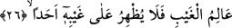

yanında yine süre anlamına gelen bir de “zaman” kelimesi vardır. Bu iki sözcük
arasındaki farka gelince “emed” herhangi bir sürenin son sınırı anlamınadır, “zaman”
ise genel anlamlıdır. Hem başlangıç, hem de son sınır anlamına kullanılır.
Bu açıklamalarımızın ışığı altında âyet-i kerîmeye mânâ vermek gerekirse: “Size vaad
edilmiş olan azap mutlaka bir gün gelip çatacaktır. Fakat bunun vaktine gelince, ben
bunun ne zaman gerçekleşeceğini bilmiyorum. Çünkü Allah Teâlâ bunun vaktini bizlere
beyân etmemiştir. Zira onu gizlemekte bir maslahat görmüştür.” Bu cümle, müşriklerin
tehdid edildiklerini duyduklarında, bunu alaya almak ve inkâr etmek için “bu tehdid ne
zamanmış!” diye söylemiş oldukları söze bir cevap mâhiyetindedir.
Burada şöyle bir soru sorulsa: “Peygamber Efendimiz (s.a.) işâret parmağı ile orta
parmağını göstererek «Benim peygamber olarak gönderilmemle kıyâmet arasında işte
şu iki parmağım kadar bir zaman vardır» buyurduklarına göre kıyâmetin yakında
kopacağını biliyorlardı. O hâlde burada nasıl olur da «Bunun yakın mı yoksa uzun bir
süre mi olduğunu ben bilmiyorum» diyebilir?” diye sorsa, bu soruya şöyle cevap
vermek mümkündür: “Kıyâmetin kopmasının yakınlığından maksad dünyanın ömrünün
geçmiş ömrüne göre daha az kalmış olduğudur. Bu kadar bir “yakınlık” bilinen bir
husustur. Fakat kıyâmetin filan gün filan saatte meydana geleceği şeklindeki yakınlığı ise
bilinmemektedir. Ancak şu vardır: “Her gelecek yakındır.” Bu sebeple Allah şöyle
buyurur: “Allah’ın emri gelmiştir artık onu istemekte acele etmeyin.” (en-Nahl,
16/1) Bir başka âyet-i kerîmede ise aynı mânâda şöyle buyurulmaktadır: “Allah’ın
onları, sanki günün ancak bir saati kadar kaldıklarını zanneder vaziyette yeniden
diriltip toplayacağı gün aralarında birbirleriyle tanışırlar.” (Yunus, 10/45) İşte bu,
önceden geçmiş insanlar için “ölmek” sûretiyle, daha sonra gelen nesiller için bizâtihi
“kıyâmetin vukuu” ile gerçekleşecektir. Nitekim Nûh (a.s.) da kavmini tufan ile tehdid
etmişti, fakat onların bir kısmı bu tufanı bizzat yaşarken bir kısmı da tufandan önce,
“ölüm tufanı” ve “bela denizi”ne düşmüş, orada boğularak helâk olmuştur.
Mârifet ehli birisi şöyle der: “Tehdid edilegeldiğiniz şey yakın mı yoksa uzak mı ben
bilmem” demek şu demektir: “De ki; küçük kıyâmette meydana gelmekle tehdid
edildiğiniz sûrî fena ve zorunlu tabiî ölüm, Allah’ın dirilme esnâsında olacak olan
büyük ateşine girme, yakın mı yoksa uzak mı ben bilmem. Çünkü Allah’ın bu husustaki
takdirini bilmiyorum. Ya da Allah’ın irâdi ölüm, hakîkî fenadan oluşan büyük ölüm
ateşine ne zaman gireceğinizi, bunun uzak mı yakın mı olduğunu ben bilmiyorum. Çünkü
istîdad kuvvetine vakıf değilim. Onun için bu hemen mi olur yoksa Allah buna belli bir
zaman sınırı mı koymuştur ben bunu bilmem.”
26. O bütün görülmeyenleri bilir. Sırlarına kimseyi muttali kılmaz;